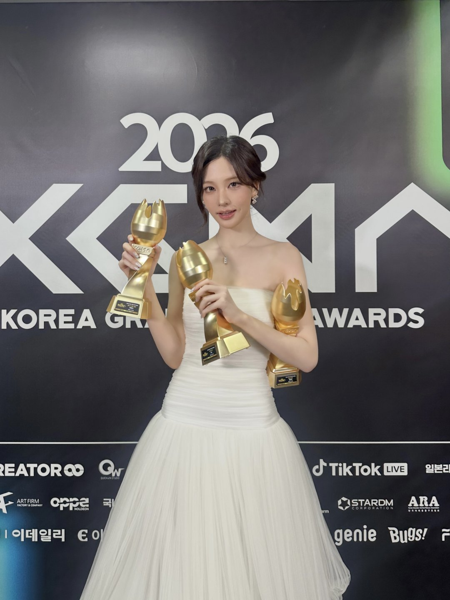

시상식이 시작되기도 전에 MC가 먼저 무대에 올랐어요. 8일 고척스카이돔에서 열린 '2026 KGMA' 둘째 날, 아이브 리즈가 맡은 역할은 하나가 아니었어요. 오프닝 무대, 진행, 수상까지 리즈의 하루를 순서대로 정리했어요.
시상식보다 먼저 시작된 'INVU'
리즈가 고른 오프닝 곡은 태연의 'INVU'였어요. MC 퍼포먼스의 하나로 준비한 무대로, 몽환적인 곡 분위기에 맞춰 노래와 춤을 함께 소화했어요. 댄스 브레이크 구간에서는 공중을 나는 듯한 고난도 안무가 이어졌어요.
이런 시작은 첫날에도 있었어요. 7일 첫날에는 리센느 원이가 '아틀란티스 소녀'로 문을 열었어요. 이틀 모두 아이돌이 선배 가수의 곡을 다시 부르며 시상식을 시작한 셈이에요.
드레스로 갈아입고, 김재원 옆 진행석으로
오프닝이 끝나자 리즈는 무대 의상을 벗고 드레스 차림으로 다시 나왔어요. 둘째 날 진행은 배우 김재원과 함께 맡았어요.
데뷔 후 처음 맡은 시상식 MC였어요. 리즈는 소속사를 통해 "데뷔 후 처음으로 큰 시상식의 MC를 맡게 돼 제게도 특별한 경험이었다"고 소감을 남겼어요.
트로피 3개, 그중 하나는 티니핑 노래
이날 리즈가 받은 개인 상은 '베스트 O.S.T'예요. 수상곡은 드라마가 아니라 애니메이션 '프린세스 캐치! 티니핑'의 주제곡이었어요. 그동안 여러 드라마 OST를 불러 온 리즈에게 시상식 OST 부문 트로피가 돌아온 거예요.
여기에 아이브가 본상인 '베스트 뮤직'과 '베스트 트렌드 세터'를 받았어요. 리즈 손에 트로피 3개가 들린 이유예요.
📷 사진 1 자리
▲ '2026 KGMA' 둘째 날 트로피 3개를 든 아이브 리즈 · 사진=스타쉽엔터테인먼트 제공
아이브의 2026년과 이어 보면
본상의 배경에는 올해 활동이 있어요. 아이브는 정규 2집 'REVIVE+'의 더블 타이틀곡 'BANG BANG'으로 퍼펙트 올킬을 기록했어요. 최근에는 미니앨범 'Looks Can Kill' 음악방송 활동을 마쳤고요.
리즈는 수상 소감에서 팬클럽 다이브에게 고마움을 전하며 앞으로도 좋은 음악과 무대로 찾아오겠다고 했어요.
정리하면서 가장 눈에 띈 건 트로피의 구성이었어요. 그룹 상 두 개 옆에 애니메이션 주제곡 상이 나란히 있었거든요. 아이브 노래로만 리즈를 알았다면, 리즈가 부른 OST 목록을 따로 찾아 들어 볼 만해요.
✍️ 직접 보거나 들은 경험이 있으면 위 문단에 한두 줄 덧붙이세요 (이 안내 줄은 지우기)
KGMA 둘째 날 리즈는 오프닝·진행·수상을 모두 맡았고, 받은 트로피는 베스트 O.S.T, 베스트 뮤직, 베스트 트렌드 세터 3개였어요. 아이브는 'Looks Can Kill' 음악방송 활동을 마무리한 상태예요.
